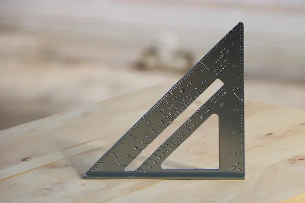

O triângulo retângulo é um polígono que possui diversas propriedades. Com os estudos dessa
figura, foi possível desenvolver o teorema de Pitágoras e a trigonometria.

O triângulo retângulo recebe esse nome porque um de seus ângulos
possui a medida de 90º, ou
seja, é um ângulo reto. Sendo um dos polígonos mais estudados na geometria plana, foi
possível perceber algumas relações entre os ângulos e também entre os lados dessa figura.
O teorema de Pitágoras, por exemplo, foi desenvolvido depois da percepção
de que existe uma
relação entre as medidas dos lados do triângulo. Assim, conhecendo as medidas de dois lados
do triângulo, é possível calcular o valor do terceiro lado. O teorema de Pitágoras diz que a
soma do quadrado dos catetos é sempre igual ao quadrado da hipotenusa.
Além do teorema de Pitágoras, outra área importante desenvolvida por meio dos estudos desse
triângulo foi a trigonometria, em que são desenvolvidas as razões entre os
lados do
triângulo, conhecidas como seno, cosseno e tangente. Por intermédio dessas razões,
percebeu-se que existe uma proporção entre as medidas dos lados de triângulos retângulos que
possuem ângulos iguais.
O triângulo retângulo é um polígono que possui três lados e três ângulos, e
um desses ângulos é
reto, ou seja, possui 90º. Os outros dois ângulos são agudos, ou seja, menores que 90º. O
maior
lado, que fica sempre oposto ao ângulo de 90º, é conhecido como hipotenusa,
e os outros dois são
chamados de catetos.
O triângulo retângulo preserva todas as propriedades já conhecidas do triângulo comum, como
o
fato de a soma dos ângulos internos ser igual a 180º. Como a soma é sempre
180º e um dos seus
ângulos já possui 90º, podemos afirmar que os outros dois ângulos são sempre complementares,
ou
seja, a soma deles também é igual a 90º.
O perímetro de um polígono qualquer é o comprimento da soma de todos os seus lados. Então,
para calcular o perímetro do triângulo retângulo, bastar somar os seus lados.
A área do triângulo retângulo, assim como de um triângulo qualquer, é a metade do produto
entre a base e a altura. O que o triângulo retângulo tem de especial é que um de seus
catetos coincide com a sua altura, já que eles são perpendiculares entre si, então, para
calcular a área, multiplicamos os catetos e dividimos o resultado por dois.
Calcule o perímetro e área do triângulo retângulo a seguir sabendo que seus lados foram
dados em centímetros.
Agora vamos calcular a área:
O teorema mais conhecido na Matemática é, sem dúvidas, o teorema de Pitágoras. A partir
desse teorema, foi possível perceber que os lados de um triângulo retângulo se relacionam da
seguinte maneira: dado um triângulo retângulo qualquer, a soma do quadrado dos catetos é
igual à hipotenusa ao quadrado.
A partir desse teorema, é possível descobrir o valor de qualquer um dos lados de um triângulo retângulo, desde que se conheçam os outros dois.
Qual o valor da hipotenusa do triângulo retângulo abaixo sabendo que suas medidas são dadas
em centímetro?
Aplicando o teorema de Pitágoras, temos que:
O nome trigonometria já remete ao seu objeto de estudo:
- tri → três;
- gono → ângulo;
- metria → métrica ou medida.
Sendo assim, a trigonometria é a área da Matemática que estuda a relação entre as medidas
dos ângulos do triângulo e aqui vamos nos ater ao triângulo retângulo. A trigonometria
estuda a razão entre os lados do triângulo de acordo com o seu ângulo. Com isso, foi
possível desenvolver conceitos importantes, que são as razões seno, cosseno e tangente. Vale
dizer que outras razões trigonométricas foram desenvolvidas com o aprofundamento do estudo
da trigonometria no círculo trigonométrico.
Antes de compreender o que é cada uma dessas razões, é importante entender o que é um cateto
oposto e o que é um cateto adjacente a um ângulo de um triângulo.
Como vimos, a hipotenusa é o lado representado pelo
segmento AB, pois ela é
sempre o maior lado do triângulo e também o lado que fica de frente ao ângulo de
90º. Os
outros lados são conhecidos como catetos. Dependendo do ângulo que tomamos como referência,
o cateto pode ser oposto ou adjacente.
O cateto é conhecido como oposto quando ele fica de frente ao ângulo. O cateto que está
oposto ao ângulo ꞵ, por exemplo, é o lado AC; por outro lado, o cateto que está oposto ao
ângulo ɑ é o lado BC.
O cateto é conhecido como adjacente quando ele forma o ângulo junto à
hipotenusa. Note que o
ângulo ꞵ está entre o lado BC e AB. Como AB é hipotenusa do triângulo retângulo, então o AB
é um cateto adjacente ao ângulo ꞵ. Empregando o mesmo raciocínio, é possível perceber que o
lado AC é o cateto adjacente do ângulo ɑ.
Entendendo cada um dos lados do triângulo, é possível compreender as razões
trigonométricas.
Para aplicar as razões trigonométricas, devemos conhecer os ângulos notáveis, isto é, os
ângulos de 30º, 45º e 60º. A maioria dos problemas de provas e vestibulares está ligada a
esses ângulos, sendo necessário, portanto, conhecer os valores das razões de cada um deles.
Veja a tabela com o valor do seno, cosseno e tangente para os ângulos notáveis:
Sabendo o valor das razões trigonométricas do triângulo, por meio de um lado e um ângulo, é possível encontrar todos os lados de um triângulo retângulo a partir da trigonometria.
Encontre o valor de x.
Para encontrar o valor de x, vamos analisar o ângulo que foi dado. Note que ele é adjacente ao lado de que conhecemos a medida, ou seja, AC é cateto adjacente ao ângulo de 30º. Então, aplicaremos a razão tangente, que relaciona o cateto adjacente e a hipotenusa. Além disso, ao conferir a tabela, sabemos que cosseno de 30º é igual a √3/2.